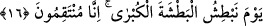
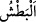

bunlar fırtınaya yakalanınca Allah’a yalvarırlar. Kurtulup sağ sâlim karaya çıkınca da
şirk, isyân ve küfürlerinde ısrâr ederler.
Mesnevî’de şöyle denilmektedir:
Zorluk ve sıkıntıdan gelir bu pişmanlık
Hazine gibi parlayan akıldan değil
Gidince pişmanlığı da alıp götüren sıkıntı
Toprak kadar değeri yoktur
Böyle bir tövbe ve pişmanlığın
O tövbe ederken şöyle buyurur aklın pîri
“Geri gönderilseler yine dönerler” (el-En’âm 6/28)
16. O gün büyük vuruşla vururuz; zîrâ biz öc alıcıyız!
“O gün” kıyâmet gününde “büyük vuruşla vururuz” ve en büyük cezâ ile
cezâlandırırız. “__WORD__/Batş” bir şeyi zor ve şiddet kullanarak elde etmektir. “Zîrâ biz öc
alıcıyız!”
Kâşifî şöyle demiştir: Kâfirleri çok sert bir şekilde yakalayacağımız o büyük günü,
yani kıyâmet gününü hatırlat.
Bunun îzâhı şudur: Allah Teâlâ onları açlık ve duman ile yakalayıp cezalandırmış,
sonra onlara Bedir günü ölüm ve esâreti tattırmıştır. Bütün bunlar büyük azabdan ayrı
olarak yakın azap kabilindendir. Kıyâmet günü ise Allah Teâlâ onları öyle şiddetli bir
şekilde yakalayacaktır ki, bu durum dünyâdaki ile asla kıyâs edilemez. Allah Teâlâ’dan
bizleri cehenneminden ve azâbından korumasını, kendi rızâsına ve nîmetlerine ulaşmaya
muvaffak kılmasını dileriz.
Bazı müfessirler demişlerdir ki: Buradaki dumandan maksad, kıyâmet alâmetlerinden
olan dumandır. Bu duman kıyâmet kopmadan evvel gökten gelip kâfirlerin kulaklarına
girecek, her bir kâfirin başı bu dumanın etkisiyle pişip kebap olmuş buzağı başı gibi
olacaktır. Mü’mine bu dumandan sadece nezle gibi bir durum ârız olacaktır. Bütün
yeryüzü sanki penceresiz ve bacasız dumanın çıkacağı hiçbir menfez bulunmayan bir
odada ateş yakılmış gibi olacaktır.
Hadiste şöyle rivâyet edilmiştir: “Kıyâmet alâmetlerinin ilki duman, Meryem oğlu
Îsâ’nın inmesi, Aden-i Ebîn’in (Ebîn’in bahçesi) içinden çıkıp insanları toplanma
yeri olan Şam’a ve Kudüs’e sevk edecek olan ateştir.” Ebîn, Yemen’de bulunan bu
beldenin çocuklarından meşhur bir adamın ismidir. Huzeyfe “duman nedir?” diye
sorunca Peygamberimiz (s.a.) bu sûredeki dumanla ilgili âyeti okudu ve şöyle buyurdu:
“Bu duman doğuyu ve batıyı kaplayacak, kırk gün kırk gece yeryüzünde kalacaktır.